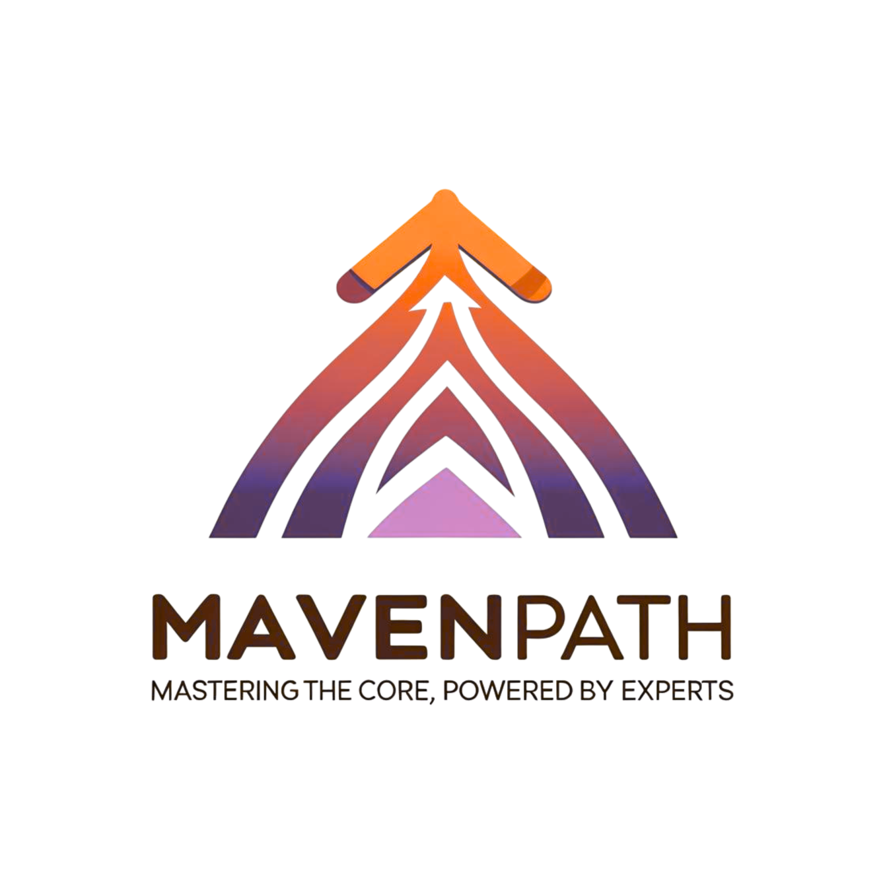
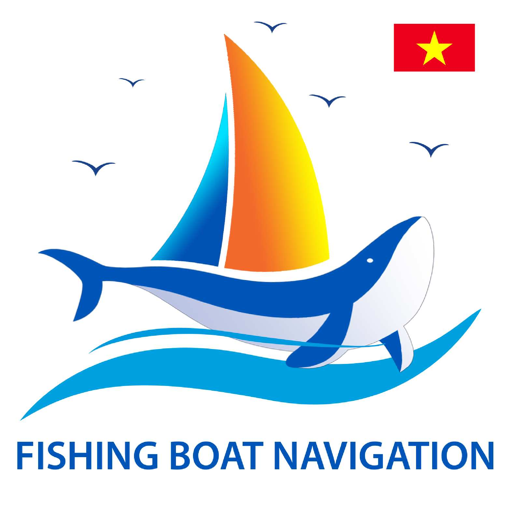

Research, industry, ventures.
A sample of things I have built or shipped — from academic research prototypes to production systems at Vietnamese tech companies, to the two ventures I co-founded.
Ventures

Mavenpath
A live e-learning platform in Vietnam focused on high-quality lecture delivery — real-time classrooms, recording, and course management for instructors who care about craft, not just throughput.

Hai Trinh Tau Thuyen
A monitoring system for fishing vessels that digitises the storage of at-sea fishing logs — and, crucially, keeps working in environments with no internet access. Logs are captured offline, reconciled, and synced when the vessel returns to shore.
Research Projects
Contrastive User–Item–Review Alignment
A contrastive framework that pulls user, item and review representations into a shared space, so that the why in a review improves ranking, not just decoration. Published at WSDM 2025.
Fair-is-Better Collaborative Filtering
A collaborative-filtering formulation that treats fairness as a first-class signal for implicit-feedback recommendation. Published at KES 2024.
Fraud Detection in E-commerce
A pipeline that automatically flags outlying transactions on an e-commerce platform, combining anomaly detection with behavioural features.
Fuzzy & Rough Set Experiments
Implementation and empirical analysis of Fuzzy and Rough Set methods for data mining — the foundation that got me into recommendation.
Industry Projects
User-Intent Identification in E-commerce Search
Analyses real search queries on Sendo.vn to classify user intent and improve ranking quality. Thesis project; Third Prize at UET's undergraduate research conference.
Logo Detection for Counterfeit Prevention
Detects famous brand logos in retailer-uploaded product images, reducing manual effort in counterfeit review on a large e-commerce platform.
Keyword Extraction for Vietnamese News
A keyword-extraction service that surfaces the most important terms from Vietnamese articles for downstream tagging and retrieval.
Named Entity Recognition for Vietnamese News
NER over Vietnamese news content — people, locations, organisations — using Bi-LSTM+CRF with contextual string embeddings.
Relevant-News Content System
Given an article, returns the top related articles from the corpus. Built around a high-performance KNN index for sub-second lookups.
Articles Classification
A labeller that matches raw Vietnamese articles to a predefined taxonomy, comparing Maximum Entropy, SVM and linear BoW baselines.
Customer Segmentation & RFM
Segments customers into homogeneous groups for differentiated engagement campaigns. EM + K-Means over RFM features.
Hate Speech Detection (Vietnamese)
Ranked 7th at VLSP-Shared Task 2019, classifying Vietnamese user-generated text as clean, offensive or hateful.